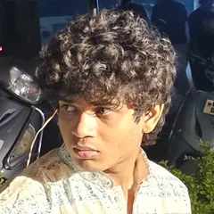

UX DESIGNER, ALWAYS BUILDING
I design digital products by combining research, user-centric design and systems thinking, with a growing focus on AI-powered experiences.
Look at the rest of my work, all on Behance.

Get to know meThe details are where the experience lives.